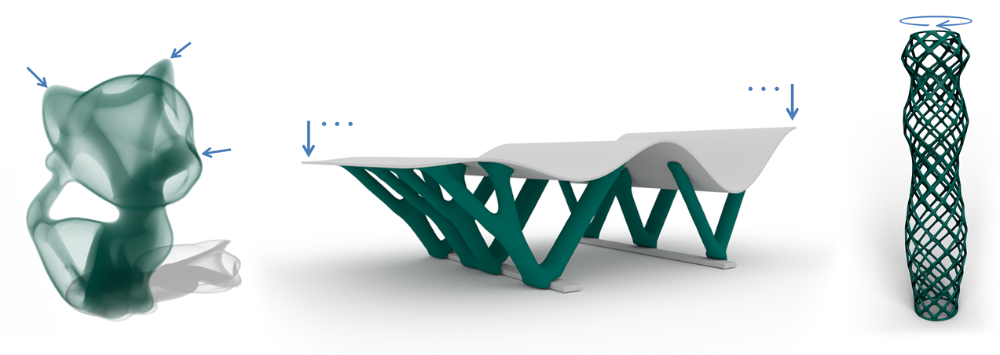
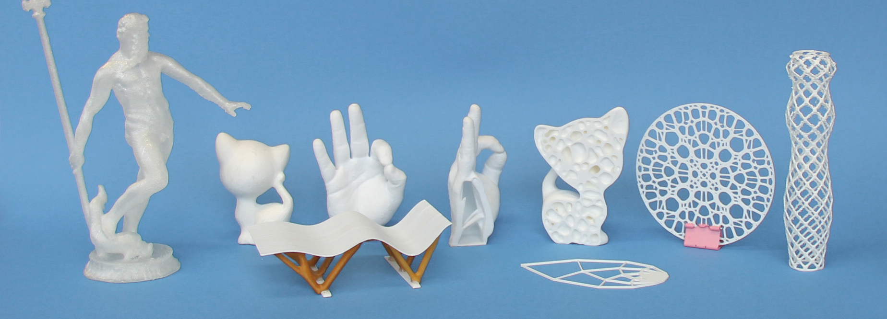

A System for High-Resolution Topology Optimization
IEEE Transactions on Visualization and Computer Graphics (TVCG), 2016
| Jun Wu | Christian Dick | Rüdiger Westermann |
| now at TU Delft | TU Munich | TU Munich |

Shapes generated by optimizing mechanical properties with respect to prescribed loads (blue arrows). The optimization process is applied to interior structures within closed surfaces~(left), exposed support structures~(middle), and surface models~(right). The examples are obtained from an initial solid design domain, targeting a prescribed volume reduction and highest possible stiffness.
Abstract
A key requirement in 3D fabrication is to generate objects with individual exterior shapes and their interior being optimized to application-specific force constraints and low material consumption. Accomplishing this task is challenging on desktop computers, due to the extreme model resolutions that are required to accurately predict the physical shape properties, requiring memory and computational capacities going beyond what is currently available. Moreover, fabrication-specific constraints need to be considered to enable printability. To address these challenges, we present a scalable system for generating 3D objects using topology optimization, which allows to efficiently evolve the topology of high-resolution solids towards printable and light-weight-high-resistance structures. To achieve this, the system is equipped with a high-performance GPU solver which can efficiently handle models comprising several millions of elements. A minimum thickness constraint is built into the optimization process to automatically enforce printability of the resulting shapes. We further shed light on the question how to incorporate geometric shape constraints, such as symmetry and pattern repetition, in the optimization process. We analyze the performance of the system and demonstrate its potential by a variety of different shapes such as interior structures within closed surfaces, exposed support structures, and surface models.3D Prints
Related Projects
Infill Optimization for Additive Manufacturing -- Approaching Bone-like Porous Structures
Self-Supporting Rhombic Infill Structures for Additive Manufacturing
Download
 |
Paper 21.5 MB |
Video (.avi) 6.1 MB |
 |
Demo (.exe) 3.3 MB |
Bibtex
@article{Wu2016TVCG,
author={Wu, Jun and Dick, Christian and Westermann, R\"udiger},
journal={IEEE Transactions on Visualization and Computer Graphics},
title={A System for High-Resolution Topology Optimization},
year={2016},
volume={22},
number={3},
pages={1195-1208},
doi={http://dx.doi.org/10.1109/TVCG.2015.2502588},
ISSN={1077-2626},
month={March},
}